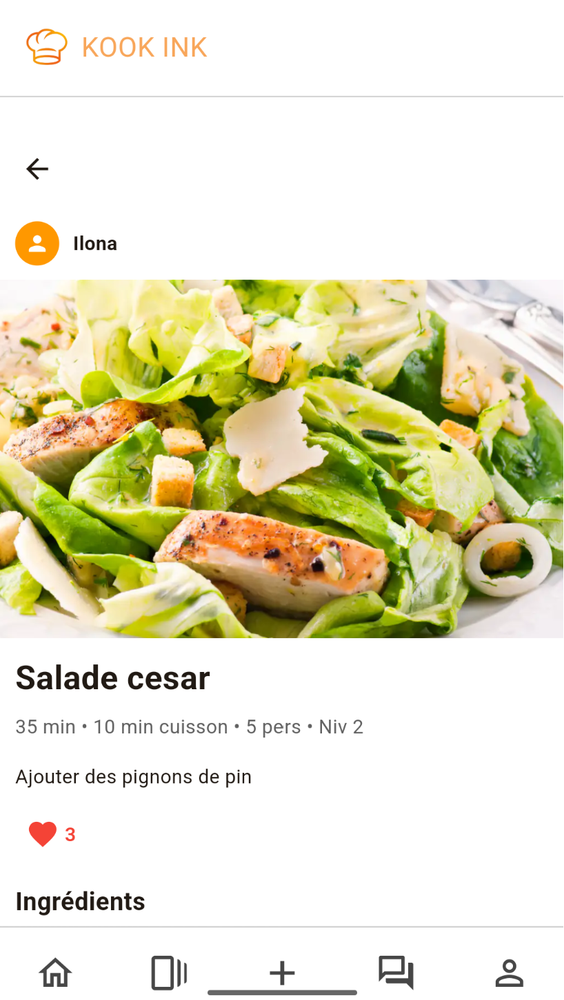
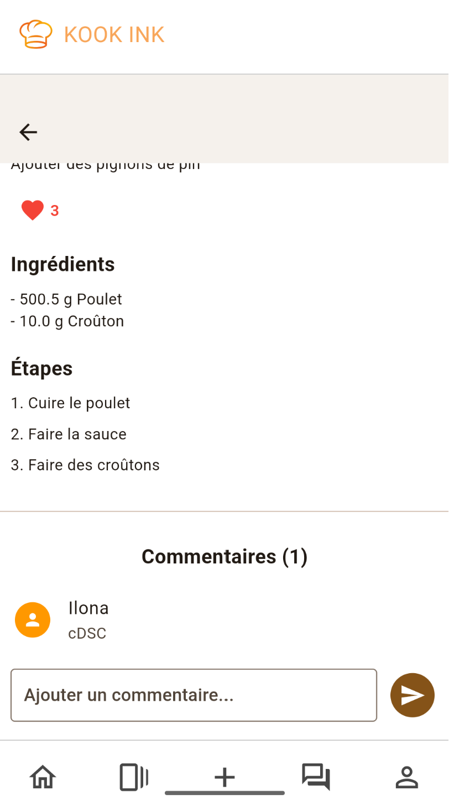
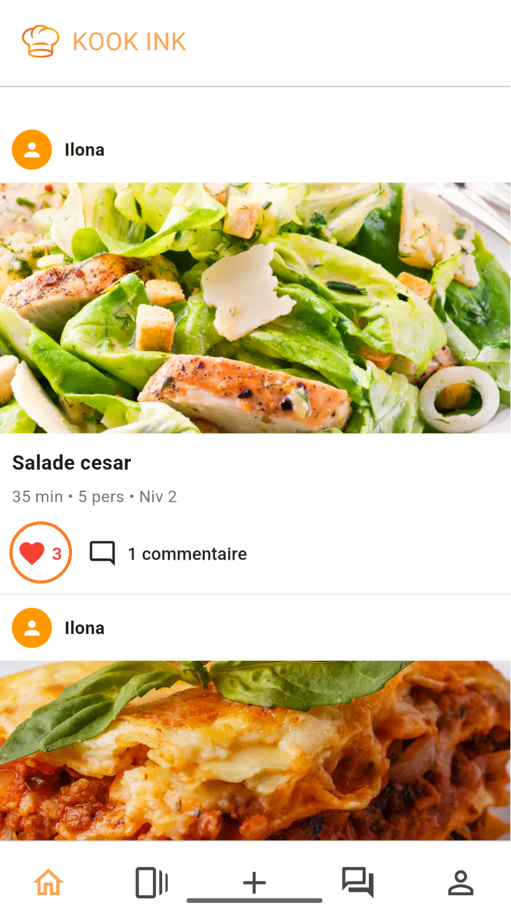
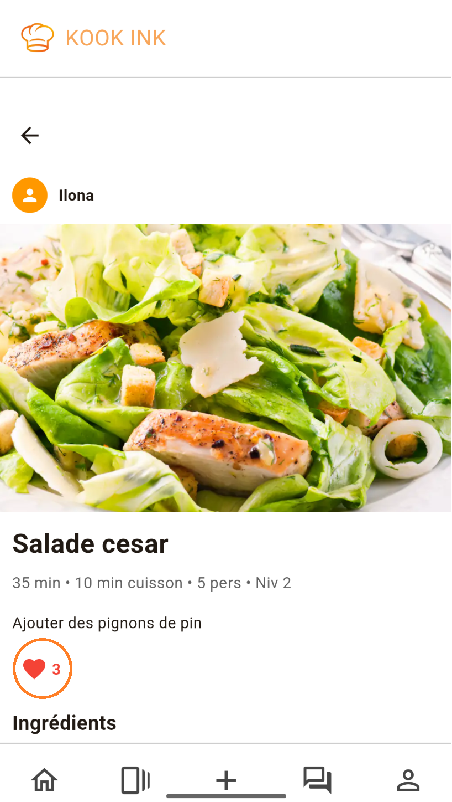

La page d'accueil
La page d'accueil est le lieu où vous pourrez explorer
l'application. Des recettes de vos cuisiniers préférés jusqu'aux
dernières nouveautés du monde culinaire, le "feed" est l'endroit
parfait pour s'inspirer !
Voir la page d'accueil
Pour accéder à la page d'accueil, appuyez sur le bouton 🏠 dans la
barre de navigation.
Naviguer dans la page d'accueil
Une fois sur la page d'accueil, vous avez accès à toutes les
recettes et posts publiés sur l'application. Tout ce que vous avez à
faire, c'est scroller vers le bas de la page et notre sélection fera
en sorte que vous ne vous ennuyez pas.
Si une recette vous intéresse, vous pouvez appuyer dessus pour voir
la page de la recette et connaître tous les détails pour préparer la
recette.


Si un post ou une recette vous a plu, vous pouvez l'enregistrer sur
votre profil en appuyant sur le bouton ❤️ en bas de la recette.


Vous pouvez aussi
aller sur le profil d'un autre utilisateur
en appuyant sur son nom d'utilisateur au dessus d'un post ou d'une
recette qu'il a publié